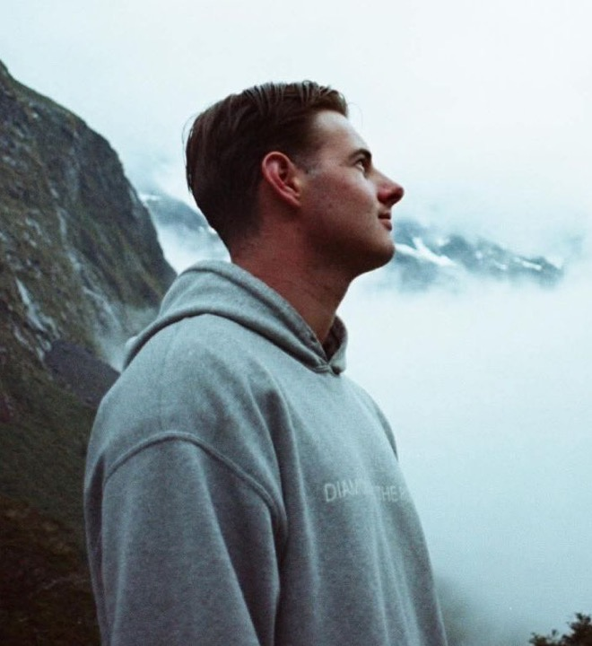

Long-form YouTube editing for educational creators
Publish Every Week Without Ever Worrying About the Edit Again.
Retention-focused long-form editing without the editing bottleneck, for creators with an audience, an offer, and no desire to manage another editor.
Jennifer Brick, The Corporate Criminologist: what she sent, and what went out.
Raw Footage In.
A Finished YouTube Edit Out.
You send the footage, script and direction. I handle the pacing, graphics, sound and final delivery.
The Retention Editing Partnership
Four Videos Every Month. One Weekly Production Rhythm.
US$4,000/month
- First cut within 72 hours of complete inputs
- Two consolidated revision rounds per video
- One onboarding questionnaire
- One onboarding call
- One music selection per video
- Graphics, pacing, and sound design
- Final export, ready to post
Not included
Shorts, ads, VSLs, rush work, monthly reports, rollover, and mixed deliverables.
Prefer to start with one video? Paid Test Edit: US$1,250.
I work with three active creators at a time.
Case study
Jennifer Got Back 9+ Hours Every Week.
“Working with Tyron, the impact was immediate. He instantly elevated the quality of my channel.”

28 days: April 21 to May 18, 2026, compared with what her channel usually gets, according to YouTube Studio. Shown as a case study, not a guarantee of future performance.
Who it is for
This Is for You If
- You publish weekly
- You already have an audience
- Your channel supports a business
- Your brand needs to stay consistent
- You want a specialist, not an on-call editor
This Is Not for You If
- You mainly need Shorts, ads, VSLs, or social clips
- You need 24-hour turnaround
- You want unlimited revisions
- You need miscellaneous video support
- You choose mainly on price
Your Channel Does Not Need Another Random Edit. It Needs a Repeatable Production Standard.
I keep the pacing, graphics, sound, music, and visual language consistent from video to video.
- Consistent channel look
- Faster first cuts
- Fewer fragmented feedback cycles

Who you are working with
Hi, I’m Tyron.
I edit long-form YouTube for educational creators from Wānaka, New Zealand. You work directly with me. There is no account manager passing your videos between contractors.
Clients keep me because the first cut arrives on time, the second cut is usually the last, and every video looks like it belongs on their channel.
From yes to your first cut
The Onboarding Process.
In their words
Fast, and Right the First Time.
“Tyron is a wonderful combination of fast and high-quality. I’m a picky guy and I want things quick. Tyron has the fewest revision cycles of any editor that I’ve worked with. He gets it from the start.”
“If you’re an Educational Creator who wants to stop thinking about editing, produce top tier videos, and produce content that engages and converts, you seriously need to hire Tyron. You will not regret it.”
Questions
The Short Answers.
What does US$4,000/month include?
Four long-form videos, one each week. Each video gets a first cut, two consolidated revision rounds, one music selection, graphics, pacing, sound design, and final export. Onboarding is one questionnaire and one call.
What do I need to send?
Complete inputs: footage, script, artwork, and required direction, supplied in the shared folder.
How fast is the first cut?
Within 72 hours of complete inputs. The clock starts once all required inputs arrive. There is no rush option, because that is already the standard.
Can I start with one video?
Yes. A Paid Test Edit is US$1,250 for one long-form video, paid before production, with the same editing standard and two revision rounds.
What if I need Shorts, ads, or VSLs?
They are not included in this package. My focus is long-form YouTube editing. Other kinds of video are only considered as separately scoped projects when capacity allows.
Ready to Be Weeks Ahead of Schedule?
Apply if you already have the audience and offer. I’ll handle the recurring long-form editing system.